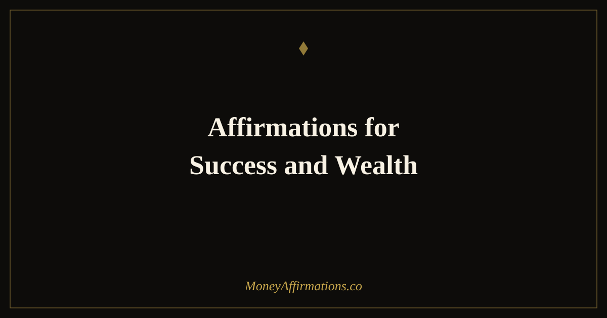

Affirmations for Success and Wealth: 30 Statements for Both

Success and wealth are not the same destination, but they are most reliably reached together. Success — the achievement of meaningful goals, the recognition of genuine contribution, the sense of professional fulfilment — is far more sustainable when it is supported by financial security. And wealth — the accumulated assets that provide freedom and options — is most deeply satisfying when it has been built through work that matters. The person who has both is not lucky. They carry a set of integrated beliefs that allows them to pursue meaningful work and be well compensated for it simultaneously.
These 30 affirmations for success and wealth address that integrated belief system. They work on the conviction that you deserve and are capable of both — not as competing goals that require trading one against the other, but as mutually reinforcing expressions of a life lived with full intention. Used consistently, they build the self-concept of someone for whom success and wealth are not exceptional outcomes but natural ones.
What are affirmations for success and wealth?
Affirmations for success and wealth are present-tense statements that build the integrated identity of someone who achieves meaningful goals and builds lasting financial assets simultaneously. They address the beliefs that most commonly create tension between success and wealth: the conviction that financial ambition is at odds with meaningful work, the fear that charging what you are worth will drive away the clients or employers who value your contribution, and the subtle sense that real success should require financial sacrifice.
These affirmations dismantle those tensions and replace them with the conviction that success and wealth reinforce each other — that doing excellent work and being paid generously for it are not in conflict. The wealth affirmations collection provides the broader financial foundation that supports this integrated practice.
30 affirmations for success and wealth
- I am successful and wealthy — these are not competing goals but the natural result of living and working with full intention.
- My success creates wealth and my wealth gives my success the freedom to grow without limit.
- I do excellent work and I am paid generously for it — there is no tension between these two things.
- I define my own success — and my definition includes meaningful contribution and significant financial reward.
- I am building a life of success and wealth through consistent effort, clear values, and deliberate financial habits.
- Success follows me because I do the work, keep my promises, and bring genuine excellence to everything I take on.
- My wealth grows because my success grows — and my success grows because I refuse to stop improving.
- I release the belief that wealth and meaningful work are in tension — they are designed to work together.
- I am worthy of financial success and I claim it fully alongside every other form of success I am building.
- The more successful I become, the more wealth I create — this is the natural law of value and return.
- I ask for what my work is worth because I respect myself, my skills, and the people I serve.
- Success and wealth are available to me in this lifetime — not as distant rewards but as present realities I am building.
- My financial life reflects the quality of my work and the clarity of my intention — both are growing.
- I invest a portion of every success into the assets that build my long-term wealth.
- I am the kind of person who succeeds professionally and builds wealth simultaneously — this is not exceptional, it is who I am.
- I take my financial life as seriously as I take my professional one — both deserve my full attention and best decisions.
- Success is not complete without financial security, and I build both with equal commitment.
- I attract the opportunities, clients, and income streams that reward my skills at their true level.
- My success is built on integrity, skill, and consistency — and my wealth is built on exactly the same foundation.
- I celebrate every milestone of success and every milestone of wealth as equally worthy of recognition.
- The beliefs that build success and the beliefs that build wealth are the same: I deserve more, I am capable of more, and I will do what it takes.
- I am successful enough to be a model for what is possible — wealthy enough to make that model last.
- I release imposter syndrome and stand fully in the success and wealth I have earned and am continuing to build.
- My professional reputation is one of my most valuable financial assets and I protect and grow it with every interaction.
- I succeed at what I attempt because I prepare thoroughly, act consistently, and believe genuinely in the outcome.
- Financial wealth is the natural reward for sustained success and I welcome it without guilt or ambivalence.
- I am building something remarkable — financially and professionally — and I feel the weight and the joy of that every day.
- Success and wealth are both available to good people who do excellent work — I am that person and I claim both.
- I live in alignment with my values, I work at my highest level, and my financial life reflects both — now and increasingly.
- I am successfully wealthy and wealthy with success — this is the life I am building and I build it every single day.
How to use these affirmations
The most effective practice with affirmations for success and wealth is to use them as an integrated pair with your professional and financial actions. Each morning, speak three affirmations from this list and then identify one success-building action and one wealth-building action for the day. The success action might be completing a high-priority project, reaching out to a key contact, or requesting feedback on your performance. The wealth action might be reviewing your investment portfolio, setting up an automatic contribution, or reading one chapter of a financial book.
The affirmation creates the identity; the dual action creates the daily evidence of that identity. Over weeks and months, this practice builds a self-concept of someone for whom success and wealth are simply what naturally happens — not because of luck or talent alone, but because of a daily practice of believing in both, working toward both, and refusing to accept that one must come at the expense of the other.
Why success and wealth require the same internal environment
Research in both achievement motivation and financial psychology reveals that the internal conditions required for sustained professional success are nearly identical to those required for wealth-building. Both require a high tolerance for delayed gratification. Both require a stable, growth-oriented self-concept that can absorb setbacks without catastrophising. Both require the willingness to invest — time and energy in the case of success, money in the case of wealth — before the return arrives. And both require the specific belief that the outcome is genuinely available to you, not just to people who are somehow fundamentally different.
This convergence means that affirmations for success and wealth are not two separate practices awkwardly combined — they are a single, integrated practice working on the same underlying psychological terrain. Someone who builds the belief system required for genuine success almost inevitably develops the internal environment needed for wealth-building. Affirmations accelerate this by making the connection explicit and reinforcing both dimensions simultaneously rather than leaving either to chance or circumstance.
Tips to make them work faster
- Define what success and wealth mean to you specifically. Generic affirmations produce generic shifts. Knowing that "success" means leading a team of ten and that "wealth" means a specific net worth gives the affirmations a concrete target to build toward.
- Do one success action and one wealth action every day. The affirmations set the identity; the dual action creates the daily proof. Consistency across both dimensions compounds faster than inconsistency across either.
- Read one biography of someone who built success and wealth together. Evidence from real lives makes the affirmations feel possible rather than aspirational. Find the model of what you are building and let it anchor the practice.
- Eliminate the belief that financial ambition is incompatible with meaningful work. This is the central tension the affirmations target. Notice every time you think this and consciously replace it with affirmation 8 or affirmation 21.
- Review quarterly, not just monthly. Success and wealth both build on longer timelines than most daily habits. A quarterly review of where you are relative to both goals provides the evidence that sustains motivation and belief over the multi-year journey.
Frequently Asked Questions
Can you be successful without being wealthy?
Yes — and many people are. Success, defined as the achievement of meaningful goals and the recognition of one's contribution, is possible at almost any income level. However, financial insecurity consistently undermines both the pursuit of success and the ability to sustain it. People who have achieved success but not built wealth are often one financial setback away from having to abandon the work they love. Affirmations for success and wealth target both simultaneously because the most durable, fulfilling version of success is one supported by genuine financial security.
Do affirmations for success and wealth work for employed people or only for entrepreneurs?
They work for everyone — and many of the most important applications are in employed contexts. The beliefs that prevent asking for a raise, seeking a promotion, or negotiating a better package are identical to the beliefs that prevent building wealth: imposter syndrome, fear of being seen as greedy, the conviction that what you have is all you deserve. Affirmations for success and wealth address these beliefs directly, creating the internal conditions in which employed people negotiate more confidently, advance faster, earn more, and invest the difference rather than spending it.
How do I know if my success and wealth affirmations are working?
Look for changes in how you make decisions, not just how you feel. Signs that affirmations for success and wealth are working include: asking for more (higher rates, raises, better terms) without the same internal resistance; making investment decisions with greater confidence and less anxiety; noticing financial opportunities you would previously have overlooked; and carrying a general sense that your financial and professional life is moving in the right direction. These behavioural and perceptual shifts precede the external results by weeks or months — they are the early indicators that the belief change is real.
Success and wealth are not competing — they are complementary. Build the complete mindset that holds both with the full wealth affirmations collection and make your financial and professional life a single, integrated expression of your highest potential.